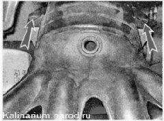
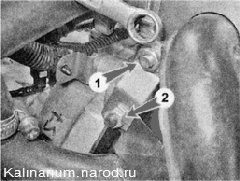
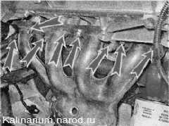

Каталитический коллектор - снятие, замена прокладки и установкаДля выполнения работы потребуется смотровая канава или эстакада. Снятие 1. Подготавливаем автомобиль к выполнению работы. 2. Снимаем брызговик двигателя или защиту картера (если установлена). Внимание! Во избежание получения ожогов работу следует выполнять после остывания деталей системы выпуска отработавших газов до безопасной температуры. 3. Обрабатываем все резьбовые соединения проникающей смазкой. 4. Отсоединяем дополнительный глушитель от каталитического коллектора. 5. Отсоединяем колодки датчиков концентрации кислорода от колодок жгута проводов моторного отсека и снимаем верхний датчик концентрации кислорода. 6. Торцовым ключом на 13 мм отворачиваем два болта крепления каталитического коллектора к кронштейну.  7. Накидным ключом на 13 мм отворачиваем гайки 1 верхнего крепления кронштейна, а затем ослабляем затяжку гайки 2 нижнего крепления. Отводим кронштейн в сторону (на фотографии вид со стороны перегородки моторного отсека).  8. Ключом на 13 мм отворачиваем восемь гаек крепления каталитического коллектора.  9. Снимаем каталитический коллектор. 10. Снимаем со шпилек головки блока цилиндров уплотнительную прокладку. 11. Отворачиваем ключом на 22 мм нижний датчик концентрации кислорода. На автомобиле, находившемся длительное время в эксплуатации, как правило, не удается отвернуть без обламывания головок болтов крепления каталитического коллектора к кронштейну Также коррозией повреждается сам кронштейн. В этих случаях вместе с коллектором следует заменить неисправные детали. 12. Торцовым ключом на 10 мм отворачиваем гайку 1 крепления защитного экрана и ключом на 13 мм два болта 2 крепления верхней части кронштейна. Снимаем часть кронштейна. 13. Если из-за коррозии отвернуть болты не удается, накидным ключом на 10 мм отворачиваем два болта 1 крепления защитного экрана к коробке передач и торцовым ключом на 13 мм отворачиваем два болта 2 крепления кронштейна каталитического коллектора к блоку цилиндров. Снимаем кронштейн в сборе с защитным экраном. Установка Устанавливаем каталитический коллектор в обратной последовательности. Прокладку и поврежденные коррозией детали заменяем. |